1 Enable the “Audit File System” policy which can be found under Computer Configuration -> Policies -> Windows Settings -> Security Settings -> Advanced Security Policy Configuration -> Audit Policies -> Object Access.
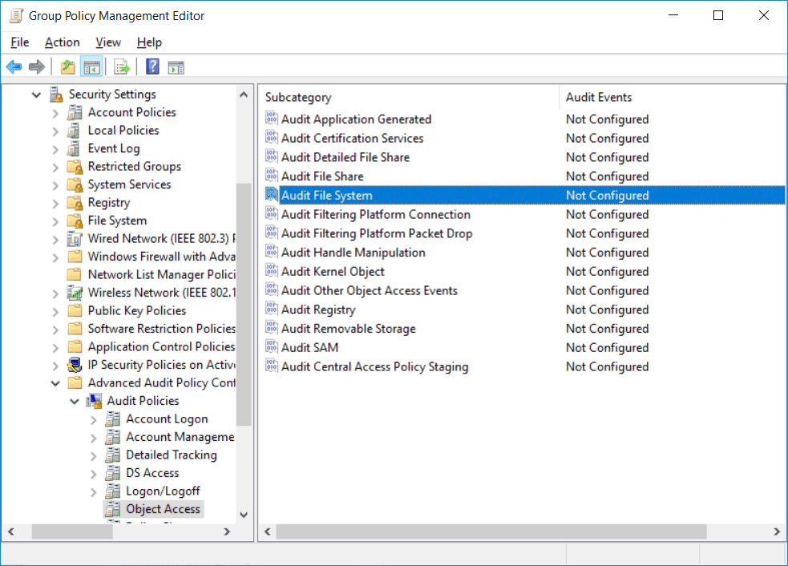2 Audit user attempts to access objects in the file system, we can view these events in event viewer. From within this policy we can optionally enable it by selecting the check box shown below. We also then have the option of auditing either success or failure events, or both.
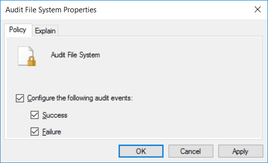3 Enable auditing of the file system to the computer that it has been applied to, we need to actually enable auditing on a per file or folder basis. We can do this by right clicking a file or folder, select properties, and browse to the security tab.
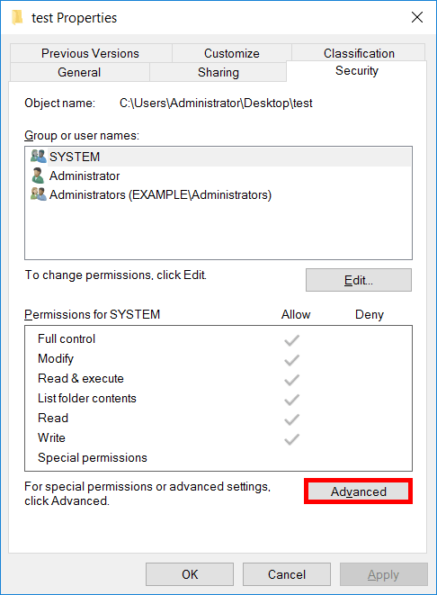4 Next click advanced, and from the advanced security settings window that opens, select the auditing tab.
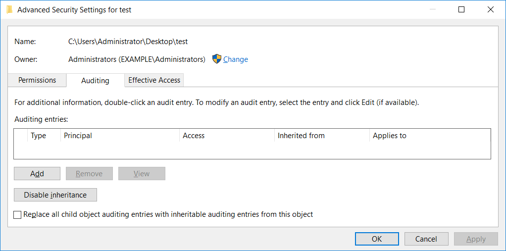5 Define a user or group that should be audited when they attempt to access this specific folder or file for either success, failure, or both event types. We can also specify if the rule applies to just this file or folder, subfolders, files within subfolders, subfolders only, files only, etc.
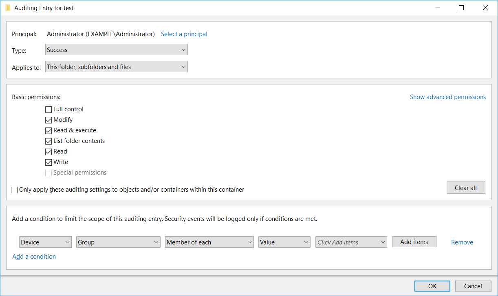7 The following event has been logged in the security event logs with event ID 4663.
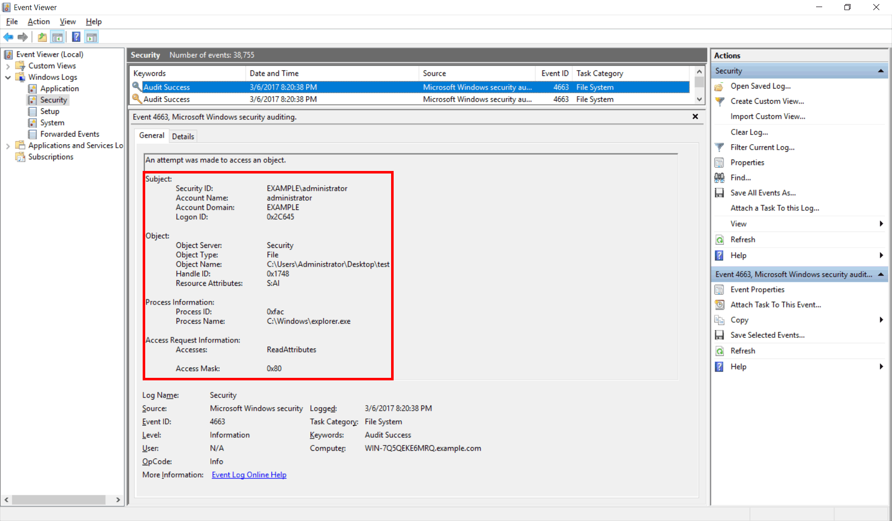1 Launch the “Group Policy Management” console. On the primary “Domain Controller” or on the system where “Administration Tools” is installed type run “gpmc.msc".
2 Create a new GPO, or edit an existing one.
3To edit an existing GPO, in the left-pane, right-click the default or a
user-created GPO, and click “Edit” on the contextual menu. This action opens the Editor window of Group Policy
Management Editor.
Note: If you want to track multiple folders, you will have to configure audit for every
folder individually.
4Navigate to the “Security” tab.
Note: It is recommended to create a new GPO, link it to the domain, and edit it.
Note: It is suggested to create a new GPO, link it to the domain, and edit it.
5 In the “Group Policy Management Editor” window, you have to set the appropriate audit policy.
6 Set “Audit object access” policy. Navigate to “Computer Configuration” → “Windows Settings” → “Security Settings” → “Local Policies” → “Audit Policy”. All the available policies under “Audit Policy” are displayed in the right panel.
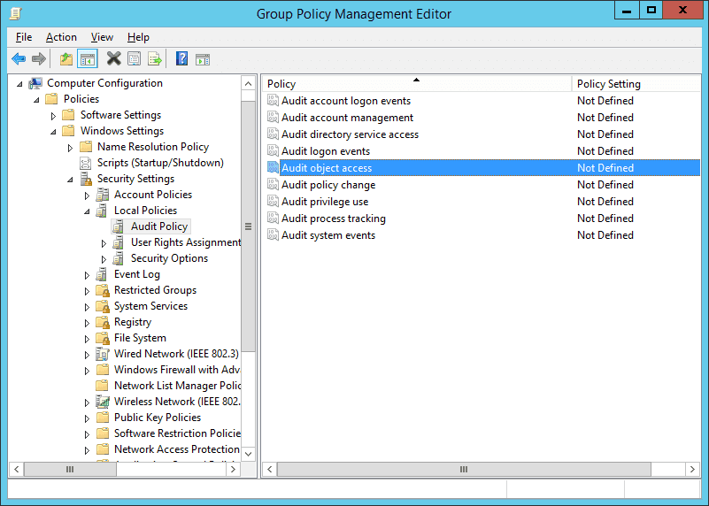7 Double-click ”Audit object access” policy to open its “Properties”.
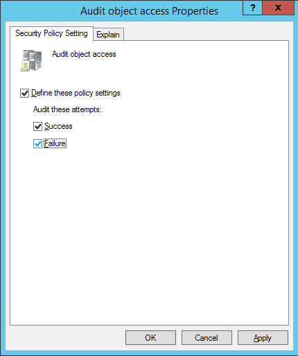8 On this window, click the “Define these policy settings” checkbox. There are two options to audit – “Success” and “Failure”. The former lets you audit successful attempts made to access the objects, whereas the latter lets you audit failed attempts.
9 Select any one or both the options as per requirement. It is recommended to select both options.
10 Click “Apply” and “OK” to close the window.
11 To immediately update the Group Policy instead of waiting for it to auto-update, run the following command in the command prompt:
After configuring GPO, set auditing on each file individually, or on folders that contain the files. Here are the steps:
1 Open “Windows Explorer” and navigate to the file or folder that you want to audit.
2Right-click the file and select “Properties” from the context menu. The
file’s properties window appears on the screen.
Note: If you want to track multiple files, put them into one, two or more folders to enable
their auditing easily. Doing this saves you from repeating these steps for each file.
3 By default, “General” tab of “Properties” window appears on the screen. Go to “Security” tab.
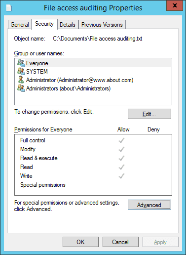4 On “Security” tab, click “Advanced” to access “Advanced Security Settings for ” window appears on the screen.
5 In “Advanced Security Settings for ” window, go to “Auditing” tab.
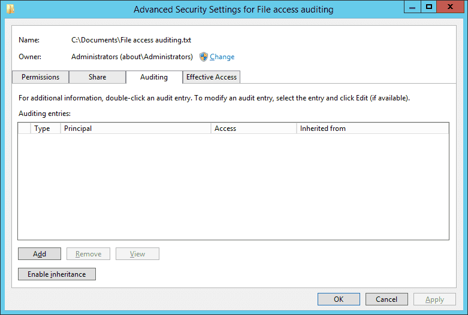6 On this tab, you have to create a new audit entry. For that, click “Add”. The “Auditing Entry for ” window appears on the screen.
7 In “Auditing Entry for ” window, at first, select users whose actions you want to audit. Click “Select a Principal”, to open “Select User, Computer, Service Account, or Group” dialog box.
8 Here, choose users to audit. If you want to audit all users’ activities, enter “Everyone” in the “Enter the object name to select” field, and click “Check Names”. In our case, we enter “Everyone”.
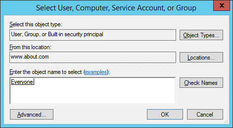9 Click “OK” to close the dialog box.
10 Three options are available in the “Type” picklist: “Success”,” Fail”, and “All”. We select “All” option because we want to audit both successful and failed attempts.
11In the “Permissions” section, you can select all activities that you want to
audit. In the case to audit file read, select “Traverse Folder/Execute File”, “List Folder/Read data”, “Read
attributes”, and “Read extended attributes” permissions.
NOTE: If you want to audit all the activities, select the “Full Control” checkbox.
12 Click “OK” to close the “Auditing Entry for File Access auditing” window.
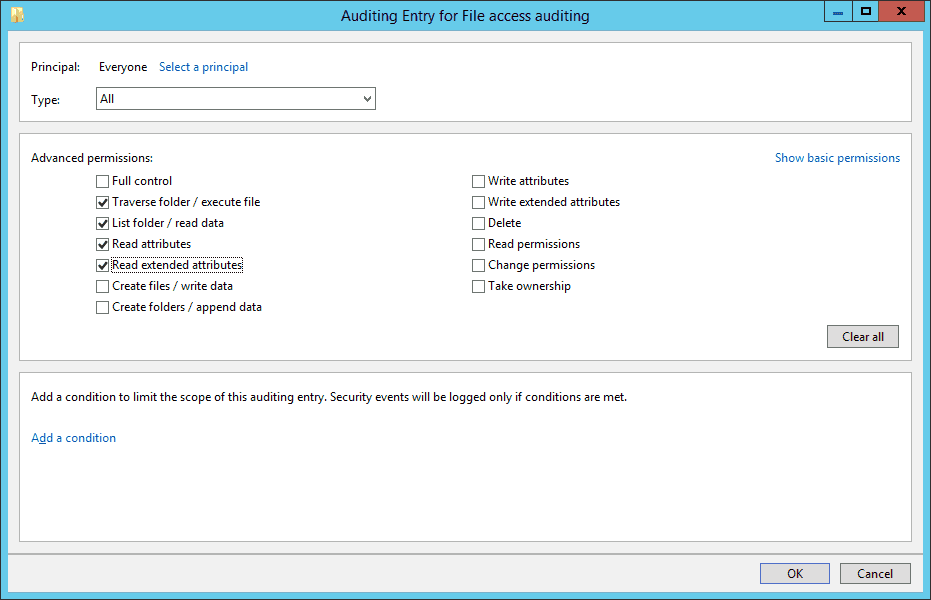13 Back in the “Advanced security settings” window, now you see the new audit entry.
14 Click “Apply” and “OK” to close the window.
15 Click “Apply” and “OK” to close file properties.
To see who reads the file, open “Windows Event Viewer”, and navigate to “Windows Logs” → “Security”. There is a “Filter Current Log” option in the right pane to find the relevant events.
If anyone opens the file, event ID 4656 and 4663 will be logged. For example, in our case, someone opened the file (File access auditing.txt), and as shown in the following image, a file access event (ID 4663) was logged. You can see who accessed the file in “Account Name” field and access time in “Logged” field.
In the below image, you can see file’s name (C:\Users\Administrator\Documents\New Text Document.txt), which is visible after you scroll down the side bar, under the “Object Name” field.